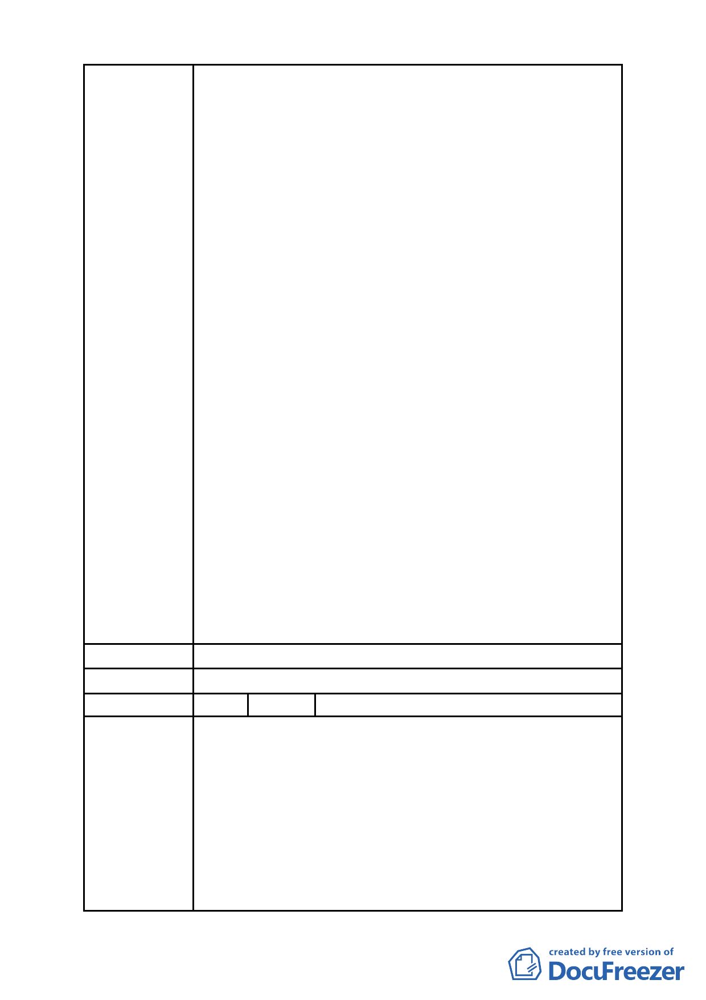

年 12 月 23 日至 99 年 1 月 22 日公展完成。
二、據「都委會」民國 99 年 3 月 22 日第 609 次都市計畫
委員會審議，會議結論稱：由市府都委會委員組成專
案小組續審，併案檢討「金泰段臺北好好看開發案」、
臺北市「基隆河 (中山橋至成美橋段) 附近地區土地
使用分區與都市設計管制要點」( 北段地區〉計畫案
(下稱「大灣北段通檢計畫」) 使得進行實質審查作
業；惟「金泰段臺北好好看開發案」自民國 97 年 10
月迄今歷經年餘反覆研擬、檢討獲致共識後，始依「都
發局」表訂版本送件審查，今如須併「大灣北段通檢
計畫」始得實質審查，不免令陳情人等憂慮：
(一)「大灣北段通檢計畫」進程繁複，其結論又將牽動「金
泰段臺北好好看開發案」內容，如此一來，歷經年餘
之討論折衝豈非俱付東流？送審時程又恐將遙遙無
期。
(二)「促進都市再生2010年臺北好好看」開發計畫案尚有
領取建築執照及開工時程限制，如依是項併案檢討結
論執行，勢必無法符合上揭時程限制，衍生之損失將
難以估計。
三、陳情人等再次表明立場如下：
（一）陳情人等願支持市府政策並依市府認可方案設計規
劃、施工。
（二)現將已形成共識之「金泰段臺北好好看開發案」與尚
待縝密檢討之「大灣北段通檢計畫」脫鉤並從速審查。
（三）北市都規字第 09836521507 號函認可之都市變更計
畫中所提99年3月31日前取得建照事，囿於現今情事
實無法達成，陳請 鈞局予以取消設限。
建 議 辦 法 （同上）
委 員 會 決 議 所提建議業已錄案供委員審議參考。
編 號 5 陳情人 奇泰建設有限公司等 6 家
一、有關「金泰段臺北好好看開發案」陳情人等已悉依臺
北市政府都市發展局(以下簡稱「都發局」) 都市計
畫委員會「修正臺北市「基隆河 ( 中山橋至成美橋
段 ) 附近地區土地使用分區與都市設計管制要點」
陳情理由
(北段地區)計畫案」第594次大會及2次座談會討論結
果 ， 並 配 合 都 發 局 98 年 9 月 14 日 北 市 都 規 字 第
098352214500 號函檢附之土地使用管制要點草案，
於98年9月21日前提送變更都市計畫書，依法申請續
行都市計畫之法定程序。
- 60 -